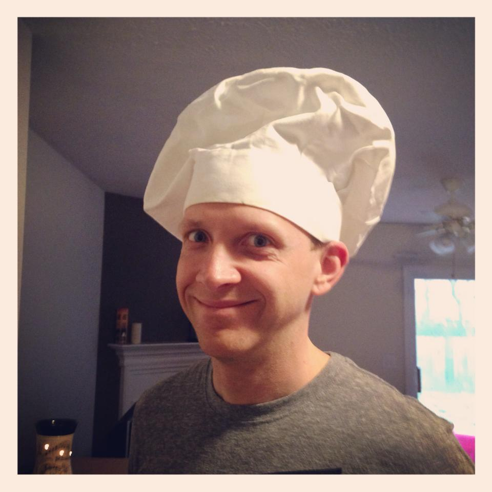

My home is Austin, Texas.
I am a student seeking a new career in web development as well as a new path in this world. I've spent the majority of my life punching a clock, passing the time away and not doing anything to challenge myself. I've always had a creative/artistic mind in my personal life but never at my place of work. I am looking to change that and approach work with a new skillset and a renewed passion.
My current hobbies are:
I am also trying to become a better cook. I consider myself a big foodie and am excited to learn more. I am also ready to explore all the great places to eat here in Austin!
My goals are to master my skillset in web-building and design, and eventually become a freelance designer. I would like to do so by becoming proficient in the following:
I love giving structure and life to a site and getting creative with it to make it stand out in a major way that is sure to catch the eye!
To read about my experience, click here!